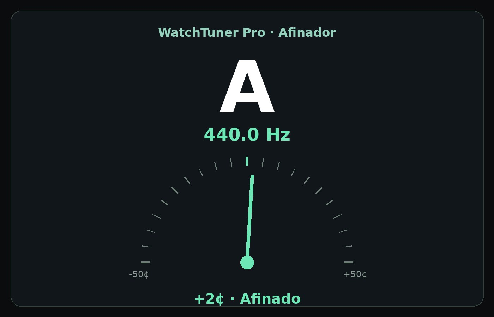
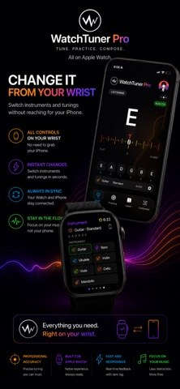
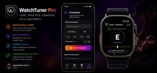

Afinador profesional
Afina con la lectura de la nota, su frecuencia y la desviación en cents, a la vista en tiempo real.
App de música · iPhone y Apple Watch
WatchTuner Pro reúne afinación, ejercicios, aprendizaje y composición en una sola app para músicos, con herramientas para distintos instrumentos y soporte para Apple Watch.

Ilustración de la interfaz del afinador.
La app
Afina con la lectura de la nota, su frecuencia y la desviación en cents, a la vista en tiempo real.
Practica con ejercicios dentro de la app y mantén tu rutina sin cambiar de herramienta.
Recursos para aprender a tu ritmo y un compositor para guardar las ideas en cuanto aparecen.
Herramientas
Abres la app y afinas: la nota detectada, los hertz y los cents se leen de un vistazo, en el iPhone o en el Apple Watch.

WatchTuner Pro incluye funciones para Apple Watch: afina y practica sin sacar el teléfono, directo desde tu muñeca.

Funciones
Preguntas frecuentes
Un iPhone con la app instalada. Si además tienes Apple Watch, puedes usar sus funciones desde la muñeca.
Está pensada para distintos instrumentos: afinar, practicar y aprender en un solo lugar.
Sí. Además del afinador, trae ejercicios interactivos y recursos de aprendizaje para avanzar a tu ritmo.
Descarga WatchTuner Pro y llévala en el bolsillo — o en la muñeca.